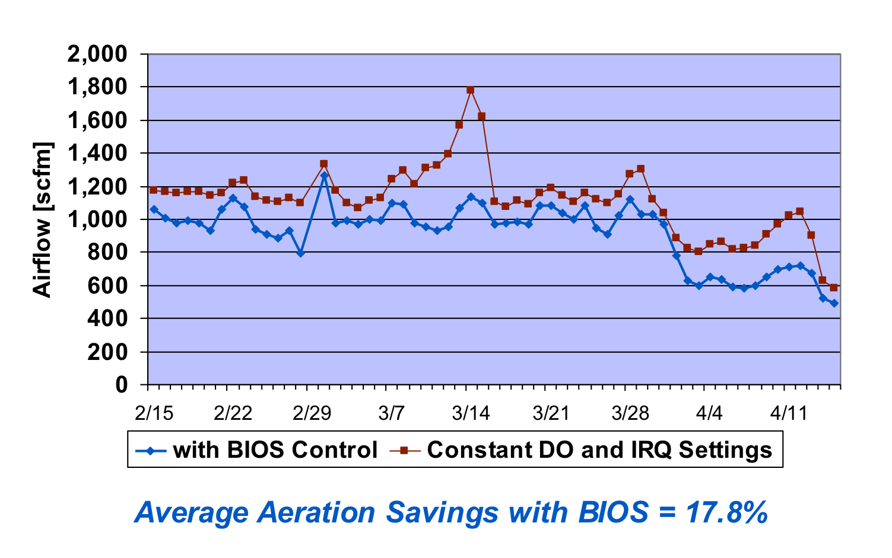
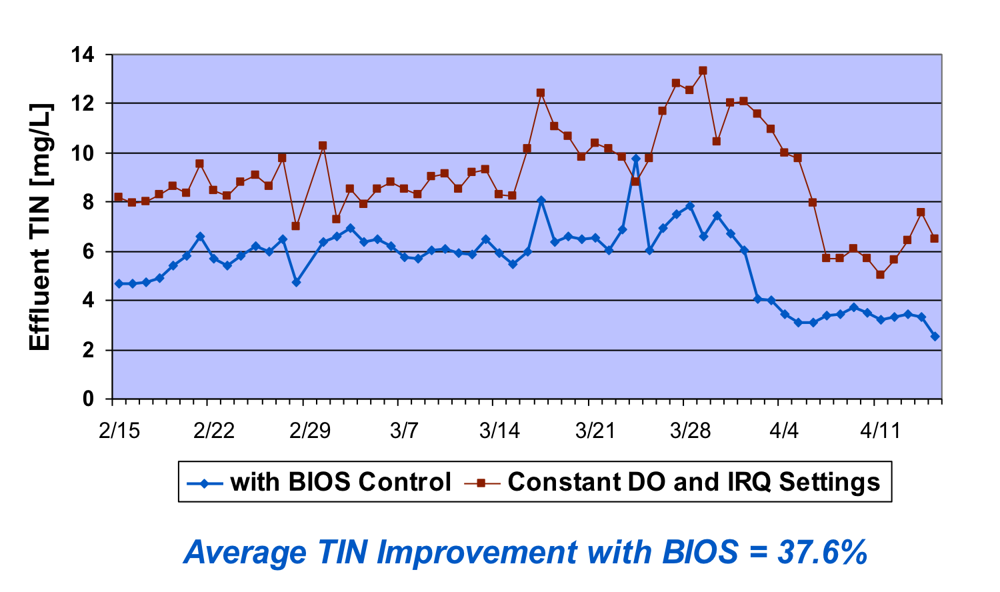
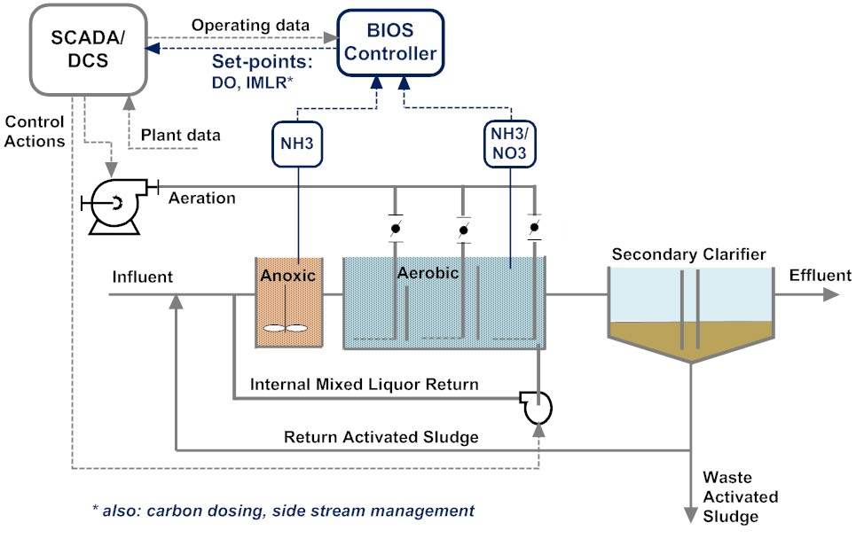
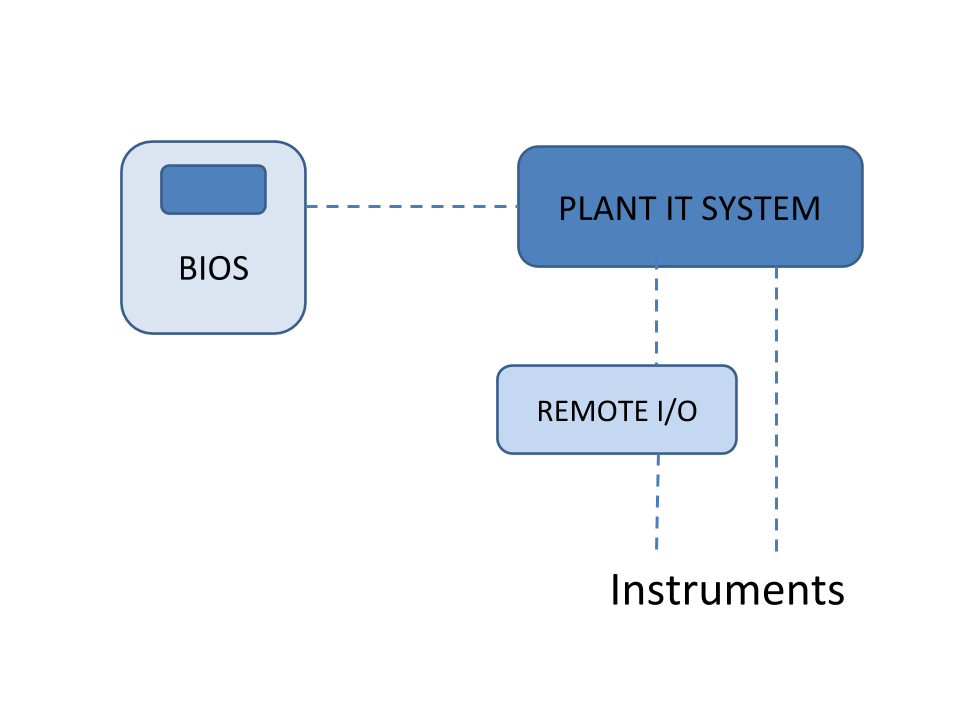
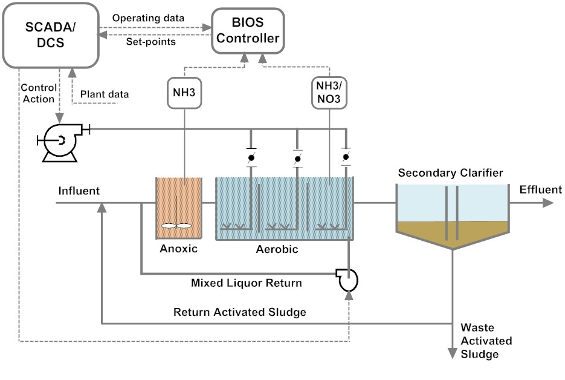

BIOS
生物工艺智能优化系统（BIOS）是一套集成硬件和软件的系统，能够根据生物反应器中动态变化的生物活性，实现污水处理运营的实时监控。BIOS 控制二级处理过程，为生物（微生物）处理提供最佳条件。
BIOS 使用定制的前馈模拟与控制算法，在最大限度降低能耗的同时，确定并调整满足处理目标所需的实时溶解氧设定点和内回流（IRQ）比率。它管理向曝气池各区的供气，以实现满足工厂具体许可要求所需的精确硝化程度，并控制池中的回流以最大限度地去除系统中的氮。


为完成这些实时工艺优化，BIOS 使用来自在线铵盐和硝酸盐分析仪、进出水流量计、在线回流活性污泥（RAS）和 IRQ 流量计、在线 DO 监测仪，以及在线或人工测量的混合液悬浮固体（MLSS——曝气池中的微生物悬浮液）和污泥停留时间（SRT）的数据。
BIOS 因此具有双重作用：最大限度降低曝气所需能耗，同时最大限度提高总氮去除率。曝气能耗通常可降低10%至20%，氮去除率改善已超过30%。部分试点装置的节能量超过25%。BIOS 还可控制向反硝化阶段的碳源投加，并可控制排泥泵以控制污泥停留时间。

生物工艺智能优化系统概述。
值得注意的是，BIOS 与 BACS 是互补产品，虽然通常单独使用，但也可以联合使用。BIOS 和 BACS 都不是即插即用型产品，而是针对每个具体应用进行高度定制。这意味着每个应用都需要深厚的工艺知识，产品不能简单地复制并移植到其他应用中。
请联系我们，了解更多有关 BIOS 如何提高您系统效率的信息。
基础 BIOS 根据流量和二级处理池中的铵盐浓度计算进水负荷。利用基于活性污泥模型的控制模型，计算达到期望出水氨氮浓度所需的最优 DO 设定点。
在基本配置中，基础 BIOS 控制一个设定点。它可以定制和扩展，以满足任何可设想的工艺设计，并控制多个设定点，包括 DO、IMLR 和 RAS。它可以与 BioChem BACS 集成，另外承担所有曝气控制功能。


请联系我们，了解更多有关基础 BIOS 控制器的信息。